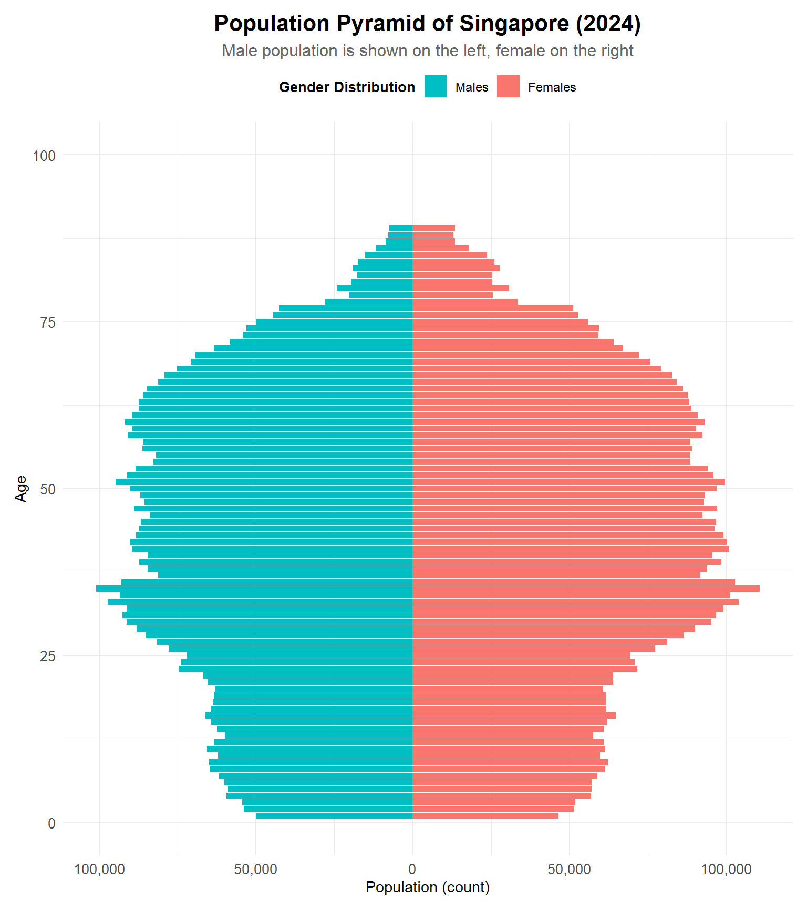

pacman::p_load(tidyverse, readxl, haven, ggrepel,
ggthemes, patchwork, ggridges, ggdist, scales, plotly,
gganimate, gifski, gapminder)Take-Home_Ex01
Editorial Brief – Visualising Singapore’s Resident Population (2024)
As the graphical editor of a media company, I have been tasked to design up to three impactful data visualisations to support an article on Singapore’s resident population as of June 2024.
The aim is to help readers quickly understand demographic trends using clear and accessible visuals based on official statistics.
Data Source
Department of Statistics Singapore (DOS): Planning Area and Subzone, Single Year of Age (0–100+), Sex (Male, Female, Total), Resident Population counts (as of June 2024)
Visualisation Objectives
- Relevance: Support editorial narratives (e.g. ageing population, regional differences)
- Clarity: Easy for general readers to understand
- Compactness: Limited to a maximum of three charts
Data Preparation Summary
- Cleaned and filtered for relevant fields (Age, Sex, Planning Area)
- Converted columns to numeric where needed (e.g. Age, Population)
- Aggregated by region and demographic groups for visual storytelling
Load packages
We begin by loading all required R packages using the pacman::p_load() function. These packages support data wrangling, visualisation, animation, and layout composition for this take-home exercise.
- tidyverse: Core set of packages for data manipulation, transformation, and visualisation using
ggplot2. - readxl: To import Excel files (
.xlsx), such as the population dataset used in this exercise. - haven: Enables importing datasets from software like SPSS, SAS, and Stata.
- ggrepel: Prevents overlapping text labels in
ggplot2plots, improving readability. - ggthemes: Provides additional
ggplot2themes for publication-quality charts. - patchwork: Combines multiple
ggplot2plots into a single composite layout. - ggridges: Creates ridgeline plots to visualise distributions across categories.
- ggdist: Supports visualisations of distributions and uncertainty (e.g. dot + interval plots).
- scales: Useful for formatting axis labels (e.g. commas, percentages, date breaks).
- plotly: Adds interactivity to static plots made with
ggplot2, enabling zoom, hover, etc. - gganimate: Enables animation of
ggplot2plots across time or other variables. - gifski: Required by
gganimateto render animations into GIF format. - gapminder: A sample dataset often used for animated population plots and trend visualisation.
Import Data
pop_data <- read_csv("TH01/data/cleaned_population_2024.csv")Data Cleaning Summary
To prepare the dataset for visualisation, the following data cleaning steps were applied:
Skipped Metadata Rows
The original Excel file contained header and metadata rows. We usedskiprows = 2to access only the actual data records.Dropped Incomplete Rows
Removed rows where any key fields were missing:SubzoneAgeSexPopulation (2024)
This ensures only valid, complete records are included in the analysis.
Renamed Columns for Clarity
Replaced generic or auto-generated column names (e.g.,Unnamed: x,2024) with:Planning Area,Subzone,Age,Sex,Population
Converted to Numeric Types
Converted theAgeandPopulationcolumns to numeric using coercion.
Non-numeric values were turned intoNAand filtered out.Removed Rows with Missing Age or Population
Any rows with missing (NA) values inAgeorPopulationwere dropped after conversion.
Data Parameters and Description
| Field Name | Field Description |
|---|---|
| Planning Area | Administrative regions in Singapore (e.g. Bedok, Ang Mo Kio, Tampines, etc.) |
| Subzone | Subdivisions within each Planning Area |
| Age | Age of residents in single years (0 to 100+) |
| Sex | Gender category: Male, Female, or Total |
| Population | Number of residents for the given demographic group in June 2024 |
EDA 1: Population Pyramid (Age-Sex Distribution)
pyramid_data <- pop_data %>%
filter(Sex %in% c("Males", "Females")) %>%
mutate(Population = ifelse(Sex == "Males", -Population, Population))
ggplot(pyramid_data, aes(x = Age, y = Population, fill = Sex)) +
geom_bar(stat = "identity") +
coord_flip() +
scale_y_continuous(labels = abs) +
labs(title = "Population Pyramid of Singapore (2024)",
x = "Age",
y = "Population (count)") +
theme_minimal()
EDA Insights
Consistent Gender Distribution at Younger Ages (0–30)
Male and female populations are roughly balanced across childhood, teenage, and early working-age groups, indicating a stable birth sex ratio and consistent migration patterns among younger residents.Mid-Age Concentration (Ages 35–54)
The largest population cohorts are between ages 35 and 54, suggesting a high concentration of residents in their peak working years. This aligns with the structure of a mature labour force.Visible Gender Divergence After Age 70
Starting around age 70, the number of females surpasses the number of males significantly, particularly in the 80+ range. This reflects actual population counts where female longevity exceeds male longevity.Shrinking Base (Ages 0–14)
The bottom of the pyramid is narrow, with the population under age 15 notably lower than other groups. This suggests that recent birth cohorts are smaller.